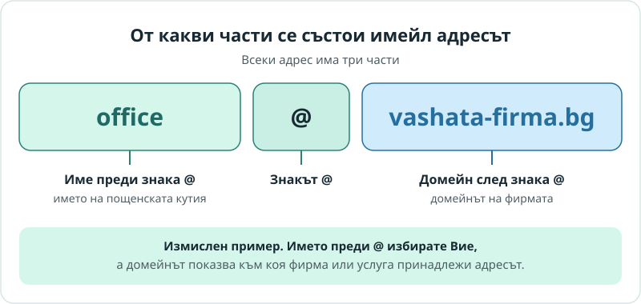
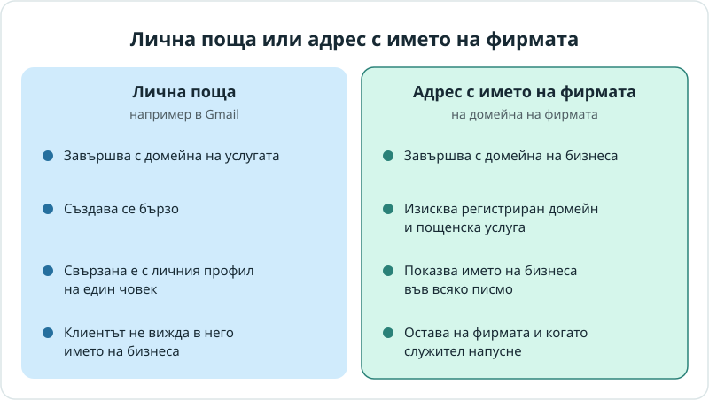

Съвети
Как да си създадете имейл адрес за фирмата
Имейл адресът на фирмата е адресът, на който клиентите Ви пишат и от който получават Вашите оферти, фактури и отговори. Той може да бъде в общодостъпна пощенска услуга или на домейна на самата фирма, тоест с името на бизнеса след знака @. Вторият вариант изисква малко повече подготовка, но показва бизнеса във всяко писмо и остава под Ваш контрол. За него са нужни регистриран домейн и пощенска услуга, а самите адреси създавате Вие.
Обновено
От какви части се състои имейл адресът?
Всеки адрес има три части: име преди знака @, самия знак @ и домейн след него. Домейнът е името, под което бизнесът се намира в интернет, заедно с окончание като .bg или .com.
В един измислен пример адресът office@vashata-firma.bg се чете така: „office“ е името на пощенската кутия, а „vashata-firma.bg“ е домейнът на фирмата. Името преди @ избирате Вие, а домейнът показва към коя фирма или услуга принадлежи адресът.

Лична поща или адрес с името на фирмата?
Адресът в общодостъпна услуга, например в Gmail, се създава бързо и завършва с домейна на услугата. Той е удобен за лична кореспонденция, но в него клиентът не вижда името на бизнеса.
Адресът на домейна на фирмата показва името на бизнеса във всяко писмо и изглежда по-надежден за клиента, особено когато получава оферта или фактура. Той остава на фирмата и когато служител напусне, защото пощенските кутии се управляват от фирмата.

- Лична поща. Завършва с домейна на услугата и е свързана с личния профил на един човек.
- Адрес с името на фирмата. Завършва с домейна на бизнеса, изисква регистриран домейн и пощенска услуга и остава под контрола на фирмата.
Какви стъпки са нужни за фирмена поща?
Създаването на имейл адрес на домейна на фирмата минава през едни и същи общи стъпки при повечето доставчици.
- Регистрирайте домейн на името на фирмата и пазете достъпа до профила при регистратора.
- Изберете пощенска услуга, която работи със собствен домейн. Това може да е пощата към хостинга или отделна пощенска услуга.
- Свържете домейна с пощенската услуга. Доставчикът дава настройки, които се добавят към домейна, за да пристигат писмата при него.
- Създайте пощенските кутии и паролите за тях в администраторския панел на услугата.
- Изпратете пробно писмо до друг адрес и отговорете на него, за да проверите, че пощата изпраща и получава.
Когато домейнът е при един доставчик, а пощата при друг, настройките от третата стъпка се добавят при доставчика на домейна.
Какви адреси да създадете?
Повечето малки бизнеси започват с един общ адрес и с лични адреси за хората, които пишат на клиенти.
- Общ адрес като office@ или info@ за запитвания от сайта и от визитките.
- Адрес за конкретна задача като sales@ за оферти, ако с тях се занимава отделен човек.
- Лични адреси с името на служителя, например ime@ или ime.familia@, за кореспонденция с конкретни клиенти.
Използвайте един и същ модел за всички лични адреси, за да ги разпознават клиентите. Общите адреси е добре да не зависят от един човек, защото остават, когато хората в екипа се сменят.
Как да защитите пощата на фирмата?
Пощата на фирмата съдържа оферти, фактури и данни на клиенти, затова достъпът до нея трябва да е защитен. Google препоръчва паролата да е с дължина поне 12 знака и да е различна за всеки важен профил.
Включете и потвърждаване в две стъпки, ако пощенската услуга го предлага. Според Google то добавя допълнителен защитен слой, в случай че паролата бъде открадната. При влизане е нужна и втора стъпка, с която потвърждавате, че сте Вие.
- Пазете администраторския достъп до пощенската услуга у собственика на фирмата.
- Добавете телефон или резервен адрес за възстановяване на достъпа.
- Спирайте достъпа на служител, който напуска, и пренасочвайте писмата му към колега.
Как да добавите пощата в телефона?
Повечето пощенски услуги имат приложение за телефон или позволяват адресът да се добави в пощенското приложение на телефона. Обикновено въвеждате адреса и паролата, а приложението открива настройките само.
Ако настройките не бъдат открити автоматично, използвайте данните от помощните страници на Вашия доставчик. След това проверете дали писмата, изпратени от телефона, излизат от фирмения адрес и с подписа на фирмата.
Какво да съдържа подписът?
Подписът е краткият текст в края на всяко писмо, от който клиентът разбира кой му пише и как да се свърже с него.
- Име и длъжност.
- Име на фирмата.
- Телефон за връзка.
- Адрес на сайта.
Нека подписът бъде еднакъв за всички в екипа и достатъчно кратък, за да се чете добре и на телефон.
Откъде да започнете, ако подготвяте и сайт?
Адресът с името на фирмата и сайтът обикновено използват един и същ домейн, затова е удобно да ги планирате заедно. Xtra AI изработва сайтове за малки бизнеси и ги поддържа след пускането.
Първата стъпка е безплатната диагностика, където избирате вида на бизнеса си и отбелязвате проблемите, които познавате. След нея следва 30-минутен разговор, а после подготвяме оферта с приоритизирани решения и ясни еднократни цени. Диагностиката не Ви обвързва с нищо и работим без дългосрочни договори.
Често задавани въпроси
Може ли фирмата да използва адрес в Gmail или в подобна услуга?
Може, особено в началото. Адресът с името на фирмата обаче показва бизнеса във всяко писмо и остава под контрола на фирмата, дори когато екипът се смени.
Нужен ли е сайт, за да има фирмата адрес със своето име?
Не, за пощата са нужни домейн и пощенска услуга. Сайтът може да бъде добавен по-късно на същия домейн.
Колко адреса да създам в началото?
Обикновено един общ адрес, например office@, и лични адреси за хората, които пишат на клиенти. Адреси за отделни задачи можете да добавите, когато станат нужни.
Какво е потвърждаване в две стъпки?
Това е втора стъпка при влизане, с която потвърждавате, че сте Вие. Според Google тя добавя допълнителен защитен слой, в случай че паролата бъде открадната.
Колко дълга трябва да е паролата за пощата?
Google препоръчва парола с дължина поне 12 знака. Тя трябва да е различна от паролите за другите Ви важни профили.
Как се създава личен имейл адрес?
В общодостъпна услуга като Gmail избирате създаване на профил, въвеждате имената си и желаното име преди знака @ и задавате парола. Ако името вече е заето, трябва да изберете друг вариант.
Първата стъпка е безплатна
Диагностиката не Ви обвързва с нищо. Показваме Ви точно какво можем да поправим и колко ще струва.